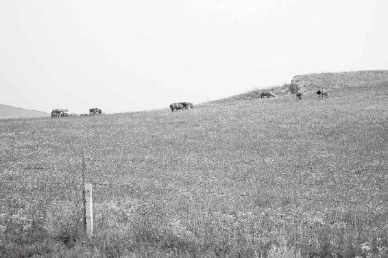

怎样把握天地变化对人的影响
会号脉的人是通神的
人的脉是顺着四季变化去跳的
脉的跳动也是跟着阴阳去走的
号脉时要根据男女的不同体质下诊断
好医生看病是替天行道
心与精相合，人才会安宁
“非其人勿教，非其真勿授”
人只有开了慧，才能得道
经文：
故善为脉者，谨察五臟六腑，一逆一从，阴阳表里，雌雄之纪，藏之心意，合心于精。非其人勿教，非其真勿授，是谓得道。
梁冬：“故善为脉者，谨察五臟六腑，一逆一从，阴阳表里，雌雄之纪，藏之心意，合心于精。非其人勿教，非其真勿授，是谓得道。”
徐文兵：这是《金匮真言论》的一个总结的段落，我们先从“天有八风，人有五风”开始，讲了四季变化对人的影响，东、南、西、北刮的不同风对人的影响，后面开始罗列五行分类对人的影响，讲了天、讲了地，最后落实到人，以及怎么去把握那些天地变化对人的影响。
《金匮真言论》讲了四季变化对人的影响，东、南、西、北刮的不同风对人的影响，后面开始罗列五行分类对人的影响，讲了天、讲了地，最后落实到人，以及怎么去把握那些天地变化对人的影响。

把握天地变化对人的影响，人才能活得好。
会号脉的人是通神的
梁冬：“故善为脉者，谨察五臟六腑”是什么意思？
徐文兵：把握天地对人的影响，最后落实到人，就是去把他的脉。我们说了解一个人就是“我把准了你的脉了”，说句不好听的就是“你一翘尾巴我就知道你拉什么屎”，这叫“善为脉”。所谓“善为脉者”就是善于号脉的人通过脉象可以体会到内在的五臟六腑的变化。谨是严谨的“谨”；察是警察的“察”，“察”怎么写？
所谓“善为脉者”就是善于号脉的人通过脉象，可以体会到内在的五臟六腑的变化。
梁冬：有点像“祭”字，是不是？
徐文兵：它本身就是个“祭”字。我去日本访问的时候，特别注意几个字：警察所——相当于我们的派出所。比警察所高的是警视厅。
梁冬：它们是什么关系呢？
徐文兵： “视”和 “察”是不一样的。东京警视厅的位置很高，具体办事的是警察。我们经常说“视察”。
梁冬：“视”和“察”有什么区别呢？
徐文兵：通过号脉去把握五臟六腑的变化，绝对不是去切开人的肚子去看。所以，用肉眼去看东西叫“看”、叫“见”，但不能用“视”，也不能用“察”。视和察都带一个“示”字边。
所谓“视”是处在一种通神的状态下，我们经常说“视而不见，听而不闻”，那个“视”就是说，我在入定的状态下，没有体会到、没有感觉到眼前的东西。
道家修炼中有一个考察学生的方法，比如说咱俩今天晚上开始静坐，正好天上有一个月亮，但我们是在一个密闭的没有窗户的屋子里静坐，所以不知道天昏地暗，也不知道时间过了多久。然后，老师就问，月亮在哪儿？就是考察你在肉眼看不见的情况下能不能感觉到月亮的存在，并确切地指出它的方位。如果你能做到，那么考试通过，你可以去练下一级。
“视”和“察”是要用心才能达到的一种状态
徐文兵：司马迁在《史记·扁鹊仓公列传》里记载扁鹊，说他跟长桑君修炼，服上池水,然后又吃一些药，最后从长桑君手里得到了上古传承下来的典籍。
长桑君把扁鹊培养到了什么程度呢？扁鹊出师时可以视见垣一方人，意思是能够视见墙对面的那个人。这个视就是我前面说的那个状态，是在通神静坐的状态下，感觉到墙对面那个人的存在的。
梁冬：《史记》上是这样记载的？
徐文兵：没错，扁鹊甚至能够描绘出那个人长什么样、穿什么衣服，这叫出神入化。所以， “视”和“察”不是用肉眼，而是用心才能实现的。
“视”和“察”不是用肉眼，而是用心才能实现的。
徐文兵：古代没有表，大夫号脉的时候要数息。什么叫数息呢？不是数病人“呼哧呼哧”那个呼吸，而是自己调息。大夫根据自己的呼吸节奏，了解病人脉搏的快慢。
一般人的脉叫“一息四至”，就是大夫一呼一吸之间，他的脉跳四下。低于四下、三下，叫迟脉，高于五下、六下，叫数（shuo）脉。司马迁记载扁鹊 “可以视见垣一方人”，“以此视病”——用这种方法去给人视病，“净见五臟症结”，没打开肚子，但是你有什么病我都知道， “望而知之谓之神”，“特以诊脉为名耳”。
其实，大家都有过类似的体验。有一次，我在早晨八点起来，在上班路上突然想起一个半年前看的病人，那人姓赵。我当时心想，“这个人有段时间没来，不知道他怎么样了？”
等我一进办公室的门儿，赫然发现那人正坐在那儿等我呢！他没预约，没挂号，临时有点不舒服就来了。
梁冬：有一天，我在马路上突然想到一个以前的同事。我想这个人现在在干嘛呢？然后刚一抬头，这个人就迎面走来了。
徐文兵：老天赋予我们的很多先天的本能，很神奇的。但是，被后天那些自以为很怎么怎么着的意识给蒙蔽住了。当医生的修行到一定程度的时候，能够入定、能够静心的时候，他能体会到很多东西，包括玄之又玄的“悬丝诊脉”。
当医生的修行到一定程度的时候，能够入定、能够静心的时候，他能体会到很多东西，包括玄之又玄的“悬丝诊脉”。
“男女授受不亲”，公主、皇后出身高贵，不能让一个小破大夫摸来摸去的，所以就在手腕那儿搭根线。搭根线就有动静，就是不搭线，躲在围帐里，医生靠本事也能感觉得出这位高贵病人的病情来。
梁冬： “视”和“察”有什么区别呢？
徐文兵：“察”带个“祭”，带个“肉”，还摸着肉。“视”是完全不接触。
梁冬：察的哪个部分是“肉”呀？
徐文兵：祭祀的“祭”，上面左边不是个“肉”吗？
梁冬：像“月”字的那个部首。
徐文兵：上面是个“肉”，祭祀是要用肉的。改成“察”以后，还有个肉的接触。所以，号脉有肉的接触，叫“察”。我干脆不摸你的脉，叫“视”。所以， “视”要比“察”高一级别。
梁冬： “警视厅”要比“警察厅”高。
徐文兵：所以，警察是接触事主和抓贼的，叫“察”；那个控制警察，不需要亲自下基层的，叫“视”。
是多大的料，就会碰见多大的事儿
徐文兵：脉是我们能摸到的血管的搏动，就是动脉的搏动。我们经常说，中医讲气，你看不见气，体会不到气，但是你可以去摸一下他身体的温度——热的地方叫“有气”，凉的地方叫“没气”这叫卫气。
中医讲气，你看不见气，体会不到气，但是你可以去摸一下他身体的温度——热的地方叫“有气”，凉的地方叫“没气”这叫卫气。
另外，我们除了心臟搏动以外，跟它同步，是谓“谐”——谐同效应的“谐”。谐的那个东西就是动脉。那也是一种气，我们管它叫营气。我们号脉摸的是动脉的搏动，号的是营气。但是医生还要摸身上其他的部位，包括有的人左半边身凉、右半边身热；有人上面热、下面凉；有人上面凉、下面热，这号的是卫气，叫“尺肤诊”。
摸一下人家的胳膊、皮肤，这都是古代的 “察”，都是要肉挨肉、彼此接触的。这个脉跳动的样子，我们给它起个名儿，叫“脉象”。这个“像”是单立人的“像”，就是说，我有脉在这儿跳呢，它是个客观存在；但是同样的脉，不同的人摸完了以后得出的结论不一样，这就是说“脉象”不同，为什么不同？
梁冬：因为摸脉的人不同。
徐文兵：简单来说，同样一张X光片，不同的大夫看，得出的结论不一样：这个说结核，那个说癌症，那个说就是一口痰堵那儿了。为什么会这样，谁更接近于真相呢？最后只好开胸验肺，看看到底是什么。谁更接近于真相，说明谁的诊断水平就高。所以，想学好中医，必须要提高作为医生的个人素质和修养，提高感觉的敏锐度。
我们以前搞科研，做过脉象仪，就是把脉的波动反映在图纸上。我心说，看到图纸上画的曲里拐弯的那些东西，不同的人得出的结论不一样，与其跟客观的东西较劲，不如提高一下主观的修养。所以，“善为脉者”，指的是有修养、有修炼的人，而不是说自个儿手还冰凉呢，搭人的脉，号了半天什么也号不出来。
梁冬：这话说明，你是多大的料，就会碰见多大的事儿。在你没有修炼好以前，最好的事物迎面而来，也会擦身而过，因为你根本兜不住。
你是多大的料，就会碰见多大的事儿。在你没有修炼好以前，最好的事物迎面而来，也会擦身而过，因为你根本兜不住。
徐文兵：或者本来是个好事儿，也能让你做坏了。
什么人能够“不打开箱子，就能确定里面有什么东西”
徐文兵：现在人们提出一个黑箱理论。黑箱、白箱的区别在哪儿？打开箱子才能知道里面是什么，叫“白箱”；没打开箱子，你能确定里面的东西，叫“黑箱理论”，这是高手。很多人说这不是玄乎嘛？其实，“有诸内必形诸外”，中医就通过外在这种能摸到的脉象，去用心体会它内在的一个变化。
汉朝有个名医，叫郭玉，他说过一句名言叫“医者意也”。他当时给皇帝看病，皇帝不信，说：这人有那么神吗？于是皇帝想考考他，就搭了一个帷幔，让里面的一个宫女伸出左手来，让郭玉号脉，号完了以后，又让一个小太监伸出右手，这个手大概也挺白净、纤细，跟那个小宫女的手差不多。伸左手的人是个宫女，伸右手的是个小太监，让郭玉挨个号脉。郭玉摸完脉，两个都号完了，皇帝就问：“怎么样？脉象如何？”
郭玉说：“臣行医这么多年，没见过这么奇怪的脉，一雌一雄，一阴一阳。”打开床幔，出来的是两个人！郭玉通过了皇帝的考试，成为御医。
如何让一个病人发自内心地信任医生
徐文兵：现在很多病人去看大夫，一伸胳膊不说话，然后问：我什么病？这其实是一个试探。如果这个大夫通过了，医患之间的信任感一下就建立起来了，这时候你给他用针用药，效果非常好。为什么？病人已经发自内心信任你了。
现在很多病人去看大夫，一伸胳膊不说话，然后问：我什么病？这其实是一个试探。如果这个大夫通过了，医患之间的信任感一下就建立起来了，这时候你给他用针用药，效果非常好。
但是，现在的大夫、医生基本上很难通过这个考试。也有通过的，比如说，病人问：“大夫我什么病？”
医生回答：“你阴阳不和，气血不调。”
所有的人不能都得出这个结论的。这就是一个诊断的功夫。
通过号脉，通过脉在外面的搏动，你能体会到内在五臟的变化，这叫“谨察五臟六腑”。介绍一下号脉，左右手的脉象是不一样的。有的人说我只有一个心臟，为什么左右手脉象不一样？因为从解剖学上来讲，是有区别的。比如说，左胳膊离心臟比较近；右胳膊离心臟比较远，还是有不同之处的。即便根源相同，还有个位置的不同。所以，中医认为左手和右手的脉象是不一样的。
在北半球的时候，左手代表生发——太阳从东边起；右手代表肃降。所以，左手食指代表心、中指代表肝、无名指代表肾，肾阴。右手食指代表肺、中指代表脾胃、无名指代表肾阳。这就是通过这三个指头去“谨察”五臟六腑的变化。
左手食指代表心、中指代表肝、无名指代表肾，肾阴。右手食指代表肺、中指代表脾胃、无名指代表肾阳。这就是通过这三个指头去“谨察”五臟六腑的变化。
有一个离退休军队老干部找我看病，我一摸右手，发现他的脉象很怪，这个脉我没见过，脉的波幅特别长。正常人都是三个指头，到第三个指头，尺脉都偏弱，但是他到四个指头都能摸见。后来，他说了，“我放了四个支架。”
通过号脉，我察觉到了他体内有异常，我说：“你有很严重的胃病。”
他说：“我吃得香，喝得香，我怎么会有胃病？”
我说：“您去查一下吧！”
他后来就去做了胃镜。现在这个胃镜技术也进步了，就好像让患者稍微睡一小觉儿，那胃镜就做完了，没有任何痛苦。当时，胃镜报告证实，他患有重度萎缩性胃炎，有肠上皮腺化生，还有腺体的增生和淋巴结的肿大。再往下一步，肯定就是胃癌了。
最后，他拿着报告单来找我说：“徐大夫，你说得对。你看，这怎么办，人家给我开了好多胃药。”
我说：“你既然验证了我的诊断，就按我们中医的方法去调治，它是可逆的。”
所有的癌症里边，只有早期的胃癌，我还敢调治。其他的癌症，咱水平不高，不敢调治，为什么呢？因为胃是 “腑”，五臟六腑的“腑”，它长在腑上。如果您得了什么肺癌、肾癌、肝癌，那就到了“臟”了，就不好调治了。所以，通过号脉是可以体会到五臟六腑的变化的。
愿意学号脉的话，可以看看李时珍写的《濒湖脉学》。李时珍晚年就住在 “濒湖”，自号濒湖老人。他把二十七种脉象全部以七言歌诀的形式总结出来了。
愿意学号脉的话，可以看看李时珍写的《濒湖脉学》。他把二十七种脉象全部以七言歌诀的形式总结出来了。
只有好医生才配叫“人肉CT机”
梁冬：好的医生就是要把自己修炼成为一个人肉CT机。
徐文兵：CT机有局限性，比如说，万一扫描间距拉宽了，肿瘤又正好在那间距里面，可能就扫不到。所以，比CT还精细的是MRA，核磁共振。核磁共振也是局限于物质，只能用眼睛去看。如果懂得号脉，就能体会到患者心情的变化。
核磁共振也是局限于物质，只能用眼睛去看。如果懂得号脉，就能体会到患者心情的变化。
有一个外交部的病人，大早上起来找我抄方儿，说别人给他开了个方。我说，号号脉吧。一号脉，我说：“你是不是昨天晚上跟人吵架了？”
“啊！”他说，“你怎么这也能号出来？昨天我们楼上那一帮小青年，闹卡拉OK，不睡，我去跟他们吵了一架，气得我一晚上没睡觉。”
梁冬：人发怒时脉象是在哪个位置上？
徐文兵：整个脉绷得很紧，就是人怒从心头起的时候，整个脉就像绷紧的弓弦一样。所以，脉象的“象”，“象由心生”。你如果有那个心、有那个神，象由心生，你能体会到它的真相。你心里面没那个东西，你就摸脉的时候，数心率还能给人数错。
梁冬：你在什么样的层面上，就能看到什么样层面上的问题。
徐文兵：这些东西只可意会，不可言传，只能反复地跟着老师去号脉。老师号完一个脉，你去体会。中医里边有个“芤（kang）脉”——草字头，一个孔夫子的“孔”。
梁冬： “芤脉”到底是什么呢？
徐文兵：我们上学的时候学过芤脉，李时珍的《濒湖脉学》上也描述得很清楚：“如捏葱管儿。”就是说，你号脉的时候，患者手腕的表皮是硬的，稍微一按，“啪啦”就空了，闪了手，这是芤脉。描写得很形象、很生动，但是我没摸过。但我们大学宿舍里的老七摸到过。他毕业后分到了鼓楼中医院。鼓楼中医院是著名的调治男性不育的医院，查男性不育的时候，患者就要化验精子，专门有个特殊的屋子，让人去采精。采完精以后把精液作为样本去化验，回来再接着号脉开方。
后来，老七说：“哎哟，我天天号的都是芤脉。”就是男人在射完精以后，脉象就是“芤脉”——精血空虚的脉。善为脉者，一号脉就查出来了。
女性怀孕后脉象是“如盘走珠”
梁冬：女青年怀孕之后的脉叫弦脉，还是滑脉呢？
徐文兵：滑脉！
梁冬：滑脉是一种什么样的脉呢？
徐文兵：滑脉叫“如盘走珠”。“滑脉如珠替替然，往来流利却还前，莫将滑数为同类，数脉惟看至数间。” 这首诗是李时珍编的，告诉你滑脉跟数脉的区别。就是说滑脉跟数脉——跳得“叭叭叭”很快的那个脉有点像，但是滑脉是像小珠子一样，“咕噜噜”“咕噜噜”的。具体描述滑脉的主病，他这么说：“滑脉为阳元气衰，痰生百病食生灾。”就是说，你摸到普通人有了滑脉，他肯定是体内的元气化不了那些多余的营养物质，于是元气衰了，就会生成痰涎、食积。特别是小孩子，一摸是滑脉，肯定是食积顶住了。
你摸到普通人有了滑脉，他肯定是体内的元气化不了那些多余的营养物质，于是元气衰了，就会生成痰涎、食积。特别是小孩子，一摸是滑脉，肯定是食积顶住了。
但是有一种特殊情况，就是女子怀孕。女子怀孕就是体内有“异物”了，脉象是在第三个指头出现滑脉。肾那地方平时是沉潜的，一般摸不着。突然在那儿冒出一个咕噜咕噜的小珠子——滑脉。
但是有一种特殊情况，就是女子怀孕。
我有好几次都遇到了这种脉。我基本上都得给病人扎针，但对方一说该来例假没来，一号出这种脉，我就留个心眼儿，说：“你去查个尿吧。”
对方就说：“唉！没事儿！没事儿！不可能怀，我这么多年没采取什么措施也没怀上”。
我说：“您还是去查吧。”
查完尿回来，她又说：“没有。”
我说：“你还去查，查血。”
一看，有了。人家怀上孩子了，你再给人扎针，来个见红，就会引起流血、小产，这叫“谋财害命”。所以，我通过号脉避免了好多次事故。
人家怀上孩子了，你再给人扎针，来个见红，就会引起流血、小产，这叫“谋财害命”。
我那会儿在中医药大学的校办副主任叫王义夫，是我的师兄。有一次我们聚会，介绍一帮新朋友认识,一听有中医大夫，伸手都要号脉。我那会儿号脉功夫不灵，但王义夫灵。
当时有一个少妇要号脉。
号完脉以后，王义夫说：“你怀孕了。”号完两只手以后，他说：“是男孩！”
说得那少妇闹了个大红脸——她都不知道自己怀孕了，她老公也在边儿上，也没当回事儿，继续吃饭、聊天。后来，那位少妇就去检查了，一查，还真怀孕了。九七年的时候，那孩子出世了。九七年是牛年，那孩子就叫牛牛，现在牛牛都长大了。可见，中医的号脉多么神奇！
梁冬：刚才讲到“谨察五臟六腑”，以后我们会有专门的篇章讨论臟、腑。
徐文兵：中医的臟象不是解剖。我们把人肚子剌开看到的那叫“臟像”、是单立人的“像”；不剌开肚子，通过外在“视”和“察”的手段，体会到内在的变化，叫“臟象”，是不带单立人的那个“象”。所以，中医讲气象、脉象、臟象，都是用心去体会出来的东西。
中医讲气象、脉象、臟象，都是用心去体会出来的东西。
梁冬：像南老说的，“去面对这个问题，搞不清楚先睡觉去。”睡醒了就行了，是吧？
徐文兵：有人问南老信什么教，他说：“我信睡觉。”睡觉就是养神。道家把睡觉叫“小死”，人如果不能小死，就得不到“大活”，所以睡不好觉的人没神儿。
有人问南老信什么教，他说：“我信睡觉。”睡觉就是养神。道家把睡觉叫“小死”，人如果不能小死，就得不到“大活”，所以睡不好觉的人没神儿。
梁冬：就像当年买了万科股票的人，这些年什么都不干，一觉醒来，发现自己成为亿万富翁了。你中间折腾，抄盘，买盘，卖盘，那都没用！
人的脉是顺着四季变化去跳的
徐文兵： “一逆一从”说的是人的脉是顺着四季变化去跳的，包括臟腑。《四气调神大论》里边说过，脉象跟四季变化不一样。正常人叫什么：春天——浮起来；夏天——洪大；秋天——毛，开始往里收了；冬天叫“石”、叫“沉”，就像石头进水一样，沉下去。这叫从。
在冬天，如果一人的脉浮起来了，一个是感冒了，阳气鼓动起来；第二，可能是冬泳去了，或者这个人的岁数比较大。
在冬天，如果一人的脉浮起来了，一个是感冒了，阳气鼓动起来；第二，可能是冬泳去了，或者这个人的岁数比较大。
浮脉是什么，“三秋得令知无恙，久病逢之却可惊”。就是说，春、夏、秋三季给老年人摸到浮脉，没事，偶感风寒、微有小恙，都没事，可是如果一个病重的人突然脉浮起来了，“久病逢之却可惊”，那就要准备后事了！
春天本来应该宣发起来，人的脉应该浮起来，可是如果这个人就起不来，就代表他的肝气就不旺，或者冬天没有把精藏好。所以，通过号脉可以看出一个人体内气血的生、长、收、藏的变化跟外界天地的变化是否合拍。如果不合拍，中医可以看出来你得了什么病，“逆春气，少阳不生，得什么病”“逆夏气，得什么病”都能判断出来。具体地说，中医一号脉就知道，你现在是不是在拉肚子，是不是在打摆子？很多人说，中医可神了，其实他们的推理、推论是有根据的。
梁冬：一逆一从。
脉的跳动也是跟着阴阳去走的
梁冬：“阴阳表里”是什么意思呢？
徐文兵：阴阳是指阴脉和阳脉。我们说浮脉是阳，沉脉主里，“沉潜水蓄阴经病，数热迟寒滑有痰。”就是说，一号到沉脉，肯定是病在很深很里、病在里面。如果是冬天，阳气封藏也就罢了。如果一年四季，都是我按到你的骨头才能摸到你的脉，这种脉叫伏脉，潜伏的伏，比沉还厉害。还有一种脉叫驻骨，就是摸到骨头才能摸到脉，一看就是患了很厉害的阴寒、内停的一种病。
一般号脉分浮、中、沉三步，手一搭就能摸到，是浮脉；中间平和，是正常人的脉；按到很深才感觉到脉，就病在里了。
一般号脉分浮、中、沉三步，手一搭就能摸到，是浮脉；中间平和，是正常人的脉；按到很深才感觉到脉，就病在里了。
梁冬：那为什么叫阴阳表里呢？
徐文兵：阴阳是四季。秋冬是阴，春夏是阳，脉的跳动也是跟着阴阳去走的。如果跟它逆着的话就反四季了，反季节脉都容易出问题。
号脉时要根据男女的不同体质下诊断
梁冬：“雌雄之纪”是什么意思呢？
徐文兵：男女的脉不一样，为什么前面说的神医郭玉能号出两个人的脉不一样呢？一般来说，男人主阳，女人主阴，女人的脉是阴血比较足，男人的脉是阳气比较足。就好像我一眼看人，不管她怎么穿男装、怎么剃光头，我一看她就是个女的，这是一种感，不是觉。
一般来说，男人主阳，女人主阴，女人的脉是阴血比较足，男人的脉是阳气比较足。
梁冬：讲到雌雄之纪，雌和雄我们都知道了，“纪”是什么概念？
徐文兵：这是说你要根据男女的不同体质，再结合脉象去下诊断，男人阳气足，阴气不足，女人阴气足，阳气不足。
梁冬：什么叫阳气足，阴气不足？
徐文兵：比如说，如果是男人得了浮脉，你给他用发汗药就应该稍微谨慎点，因为他本身就是阳的。你给女人用发汗药，因为她底下阴血足，就可以加点量。女性来月经前、来月经中和来月经后，你用的药应该完全不一样。
如果一个人的脉特别细，本来是一根管子，变成了一条线，我们就知道这人阴血特别不足。如果是个男人出现细脉，我们可以理解，他的阴血就应该不足。但是如果一个女人出现了细脉，那就有虚劳的可能性、就是耗损太多了。这就是辨别雌雄，结合雌雄去辨别一个人的症状。
好医生看病是替天行道
梁冬： “藏之心意”作何解释？
徐文兵：心和意不一样。一个是我们根据老师讲的，意识到了一些东西，另外一个就得用你的心去体会了。你学到的东西不见得发自内心地能接受它，所以才有了 “学而时习之”。
学了是意识到了，但是真正触及到你的灵魂、动你的心了吗？未必。上高中都学过汽化热，就是水从液体变成汽的时候，会带走大量的热量。所以，当你用舌头去舔一个红烙铁时，它不会烫伤你。舌面上有津液，它会把热都带走。学了以后你说：老师讲得对。但是真让你舔呢？你肯定不敢。我也劝大家别去舔。万一舌头上唾液分泌不足呢！
去用心体会它，叫“藏之心意”。这个东西只有在你特别安静、入定的时候才能够体会到。不能一边号着脉，一边还想着孩子小升初、股票跌停了还是涨停了，心也不在这儿，意也不在这儿。
所以，为什么说看病累呢？用“意”是你的职业素养，你是做这个职业的，用“意”就够了。但你真要做一个好大夫，得用“心”。病人可能有些话跟父母没法讲，跟老公没法讲，跟孩子没法讲，但他能跟一个值得信赖的医生讲。谁也不傻，谁也别想骗谁。你是真的是用心用意去关爱一个病人，还是糊弄人家，敷衍了事，人家都能感觉得到。
要做一个好大夫，得用“心”。你是真的是用心用意去关爱一个病人，还是糊弄人家，敷衍了事，人家都能感觉得到。
当你用心用意去号脉体会的时候，这时候甚至能触碰到病人的心神。所以，很多人会被你感动，最后你做的工作也会把自己感动。当你的调治按照你的诊断，一步一步进行下去的时候，就是“灵和应”。为什么很多医生（抛去被人陷害、迫害死的华陀、扁鹊以外）都很长寿，他每天就沉浸在那种天人合一的感觉中，那种成就感不是说自个儿干了件什么事，而是替天行道，顺应天、地、自然的规律，成就了一件事，这时，会有一种发自内心的喜悦。我认为，这是好的医生健康长寿的一个主要原因。所以，《黄帝内经》说“藏之心意”，自个儿偷着乐，自个儿去体会。
当你用心用意去号脉体会的时候，这时候甚至能触碰到病人的心神。
为什么很多医生都很长寿，他每天就沉浸在那种天人合一的感觉中，会有一种发自内心的喜悦。
无论做什么工作，只要用心都能干得出神入化
梁冬：冯小刚曾经这样吹捧刘震云，说：刘震云老师哪是自己写文章啊，他把笔一伸出来，那个内容就倾泻而出，好像是神借由他的手写出来而已。
徐文兵：古代人评价李白：梦笔生花。什么叫梦笔生花呢？那就是跟天地的一种交流。现在黄山上不是还有个景叫梦笔生花吗？一块石头上长出棵松树。李白的诗写得好，简直就是：文章本天成，妙手偶得之。不是他自个儿写的，是老天借他的手写出来的。
什么叫梦笔生花呢？那就是跟天地的一种交流。
还有一个故事叫“江郎才尽”。江郎写文章特别漂亮，后来做了一个梦，梦见东晋文学家郭璞。郭璞说：对不起，我有支笔落您这儿了，我拿走了。从此以后，江郎脑子一片空白，再也写不出东西来了，没有灵感了。所以，现在很多影视明星都在吸毒，为什么？找灵感呢！《黄帝内经》里告诉你，灵感是那么找的吗？
据说某位著名作家当年的文章写得非常好，特别感人。有一天，他走在太阳光下，突然觉得脑子空了，从此以后再也写不出东西了。坊间传言，这个人开始吸毒。他在吸毒以后，突然觉得又有灵感了。然后，就拿出香烟纸，在背面记下灵感。等他醒来一看，写的是香蕉皮比香蕉大！这哪是灵感，这是幻觉！这是用不正当方法燃烧自己的精以后，得到的那种虚妄的东西。
所以，我觉得不管你做医生也好，擦皮鞋也好，哪怕扫马路、扫大街，如果你有这种“谨察五臟六腑，阴阳表里，雌雄之纪”，然后“藏之心意”，用心用意去扫，都能通神。
我每看到一个人专心致志做一件事情的时候，就由衷产生一种欣赏和赞美。我最喜欢看的就是小孩子在那儿专心致志地玩儿，心无旁骛，我觉得那是一个通神的过程。
藏之心意，合心于精！所以我们说，炼精化气、炼气化神、炼神还虚，这是个循环。我们都知道，物质能变成意识，再说高一点，意识能变成情感、情绪。但是你想想，人体的精是怎么生产出来的？谁让它生产出来的？谁让它按那个样儿长出来的？它背后那个东西是什么？所以它是个循环。两精相搏谓之神，神凝到一定程度以后，就会化生出气，也会化生出物质。
两精相搏谓之神，神凝到一定程度以后，就会化生出气，也会化生出物质。
关注自己叫贵人，跟着别人的点走叫贱人
梁冬：讲到“藏之心意”，就是说，一个人要学会去聚精、去会神。
徐文兵：聚精会神的时候容易什么？
梁冬：技巧出焉。
徐文兵：容易出一些匪夷所思的事情。古代人制玉，没有高速齿轮、镶着金钢石那种齿轮，就靠一个人在那儿琢、磨。玉的实质很硬，怎么能把那块玉弄成想要的模样？其实就是，精诚所至，金石为开。藏之心意，聚精会神，精诚所至，那个劲进去以后，金石为开。
梁冬：诚意正心。
徐文兵：但没有这个体会的人，你怎么说他也不信。他只相信牛顿的力。
梁冬：其实这个事情，一般人都可以感觉到。比如说，当你真正地爱一个人的时候，就会迸发出一种非常强大的力量。两个人隔着千里远，为了见彼此一面，每周都能够往返一次。然后，每天在思念、盼望中度过，一门心思要往对方所在的位置冲。等到你们结婚了，发现以前都疯了，“你怎么能干出这种事情来呢？”
当你真正地爱一个人的时候，就会迸发出一种非常强大的力量。
再比如说，你真的喜欢做一件事儿的时候，也是这样的，可以突破一切障碍。
徐文兵：但现在人的通病叫“神淡散而不藏”。《黄帝内经》告诉我们怎么去养神，怎么去聚神——“独立守神”？去站桩。
那些不懂得养生的人叫“不知持满，不时御神”。那我们怎么办？我们就“按时御神”，神的节拍就是天地走的节拍，你按照四季和昼夜的节拍走，神不就回来了吗？
梁冬：苏芮说过，“跟着感觉走，紧抓住梦的手”。
徐文兵：细分一下你是跟着“感”走，还是跟着“觉”走？我的病人经常说：“徐大夫，一到下午下班那会儿，我就困得不行。你说我是睡还是不睡啊？”
我说：“你这个问题问得有趣，你当然应该睡！ ‘天时不如地利，地利不如人和。’”
困，说明你的生物钟节律到了，你就睡！管它三七二十一，正好还避开下班高峰呢！睡醒了再回家。这就叫顺着“感”和“觉”走。第一，你觉得困了，这是“感”；你觉得倦了，身上没劲，这是“觉”。一个“感”，一个“觉”，跟着它走，慢慢你就能调试到与自然天人合一的状态。
好多人问我，什么时候吃饭？我说，那要看你什么时候饥、什么时候饿啊！关注自己，叫“贵人”；跟着别人的点走，叫“贱人”。
梁冬：萨特说过，“他者即地狱”，用他人的方式要求自己，就是地狱。
用他人的方式要求自己，就是地狱。
关注自己，叫“贵人”跟着别人的点走，叫“贱人”。
心与精相合，人才会安宁
梁冬：“合心于精”是什么意思呢？
徐文兵：“心”就是“神”，“心”和“神”在古代是相通的。所以，我们说“神”的物质基础是 “精”。所谓“精”，具体来讲是体液，包括我们的血液、精液。
人在散神、出神的时候，有这么几种体会。洗完澡，感觉要出神。喝完酒，神散了，想把它聚拢回来，且得费一阵儿呢！其实我酒量挺大，但是我不馋酒。喝个一次两次以后我就觉得，与其费了好几天的劲儿再把这个“神”聚拢回来，我还不如不喝它。所以，佛家戒酒，但他们不戒茶，喝完茶以后有醒神的作用。喝完茶以后就觉得有灵感！老喝茶就能提神。
佛家戒酒，但他们不戒茶，喝完茶以后有醒神的作用。喝完茶以后就觉得有灵感！老喝茶就能提神。
梁冬：现在还有一个“网游之毒”。
徐文兵：网瘾。上瘾的东西都是勾人魂魄的。人说你“丢了魂了”，失魂落魄的，其实被某样东西勾走了。人睡不着，叫“魂不附体”或者“失魂落魄”。
中医讲“人卧则血归于肝”，肝藏血，血舍魂。就是说，你把你的魂藏到肝血里面，相当于 “合心于精”，叫“宁”。繁体字那个“寧”，里面是有个“心”的。
我们说这人“心神不宁”，“心神不宁”对应“鸡犬不宁”。什么叫“鸡犬不宁”？ 鸡犬不回窝。
不要找中医开西药，也别吃西医开的中药
梁冬：“非其人勿教，非其真勿授”，这句话很深刻！
徐文兵：号脉的这种体会，不应该说。或者说，你是一片好心去说，但是听的人如果不对的话，得出的结果很可能不是你想象的那个样子。
农夫本来是一片好心，暖了一条冻僵的蛇，结果是被蛇一口咬死。因为农夫的好心是违背自然的。蛇是顺应天地的变化在那儿冬眠呢！你干吗给人家制造一个反季节的错觉，把人家暖和过来？我正做着一个春秋大梦，正睡得好呢，你把我弄醒了，难道不咬你一口？
道家之所以不像其他的教派那么昌明、昌盛，其中有一条就是对学生的选择非常挑剔。不是长着两个胳膊、两条腿，顶着个脑袋的人都能学的。所以，黄帝跟岐伯请教的时候，都是很庄严、很肃穆，沐浴奉香，更衣斋戒，然后诚心正意去学。
道家之所以不像其他的教派那么昌明、昌盛。其中有一条，对学生的选择非常挑剔。
如果你遇人不淑，教给一个心存不良又鸡犬不宁的人，最后他在实践中出了问题，不会说自己有问题，他说你这门学问有问题。最后，还可能来一个欺师灭祖，把你搞得一团糟。就像我们现在，经常被患者问：“我以前吃西药，现在还吃不吃？”
我说：“你去问给你开药的西医大夫，我不懂西药，也别问我。”
我经常跟他们说一句话：“不要吃中医大夫开的西药。”下一句呢？
梁冬：不要吃西医大夫开的中药。
徐文兵：现在乱用中药也是一大公害。有的人没学过中药，不知道中药的性味、寒热、归经，然后就从植物学的角度理解，一说当归就是补血的，一说麻黄就是发汗的，然后就根据他的理解去给人开药。以前有味药叫 “龙胆泻肝丸”，都是很多不了解中医的西医大夫开出去的。开出了以后，出了事儿了，然后说中药、中医有问题。
中药在正确使用的情况下才能发挥好的一面，避免有害的一面。所谓正确使用，你得学会它。你就学了几个月，根本就不懂，然后你就去开中药？简直儿戏！
现在，药厂为了卖药，走的是量，为了走量就要变成非处方药。意思是说，中药就这么用，有没有大夫开无所谓。你到药店买药，头疼吃头疼的药，拉肚子吃拉肚子的药，这就叫OTC，非处方药。所以，很多厂家都为了争这个OTC，把中药变成非处方药，打破头。最后，吃坏了很多人。所以，不要找中医开西药，也别吃西医开的中药。
梁冬：这就是 “非其人勿教，非其真勿授”。
徐文兵：挑选学生，道家要求的非常严格。什么叫“非其人勿教”呢？正心诚意是前提。另外，还要看你是不是那块料。
什么叫“非其人勿教”呢？正心诚意是前提。另外，还要看你是不是那块料。
所以，《上古天真论》就说“昔在黄帝，生而神灵，幼而徇齐，长而敦敏，弱而能言。”就是说，这个人是个可造之才，是个可教之才。佛家有句话叫“磨砖成不了镜”，本身没那个素质，“擀面杖吹火——一窍不通”，你怎么教他，教到最后只能是白花功夫，这是“非其人勿教”。他得有那个素质、有那个底子，你才能去教他。
道家也讲究因材施教，他有哪方面的特长，然后给他选定一个方向。黄帝老师说过：碰到那种言辞快，表达能力特别强的人，让他去做祝由；那些爪苦手毒的，就是下手比较狠，打在别人身上就能穿筋透骨的那种人，你让他去做按摩；比较沉静，比较安稳宁神的人，你让他带大家去静坐。这就是根据学生不同的素质，然后给他选派不同的学科。古代还有个测验方法，试一个人是不是爪苦手毒，就让他用手按一只乌龟，乌龟死了，就通过测试。
碰到那种言辞快，表达能力特别强的人，让他去做祝由；那些爪苦手毒的，就是下手比较狠，打在别人身上就能穿筋透骨的那种人，你让他去做按摩；比较沉静，比较安稳宁神的人，你让他带大家去静坐。
梁冬：这种人的气真的很猛。
徐文兵：所以，很多人只看到了力，没看到他背后那个气。
讲话恶毒的人心性有问题
徐文兵：有的人言辞比较恶毒。
梁冬：挺好的话从这种人嘴里说出来，你老觉得怎么那么伤人啊！
徐文兵：这是他的心性决定的，他可能以前受过别人的伤害，然后这种伤害凝结在自己的体内，形成了一种恶毒的东西。这种恶毒的东西是好事还是坏事，看你怎么利用它。我们可以“以毒攻毒”，这种人我们就要让他去咒痈唾病，比如有的人长一个大痈疮，是一种热毒，我们就可以让这种人去调治。这种人内心比较阴寒，说出话都那么阴寒负面，让他去做那种咒痈唾病的事儿，正好阴阳平衡，对他来说也是个解脱。他可以把体内阴寒恶毒的东西释放出去，而且释放到了一个恰当的地方。
鲁迅先生写过一篇小说，说有一家人生孩子了，大家都去祝贺，一个哥们儿上去阴阴地来了一句：“这孩子将来是要死的”。
北京人管这种人叫“找抽呢”。说的是真理，反映的也是客观现实，但是时间场合不对。像这种人就应该去做那些咒痈唾病的事儿。
所以说，古代人挑徒弟，一个是要看素质；第二，看他是不是有诚心诚意的精神去学习。张良是道家出身，当年跟黄石公学习时，黄石公故意把鞋扔到桥下，让张良去拣，这个拣鞋的过程就是试验张良——对我没有诚意没关系，但你对这门学问要有一种谦卑的态度。
古代人挑徒弟，一个是要看素质；第二，看他是不是有诚心诚意的精神去学习。对我没有诚意没关系，但你对这门学问要有一种谦卑的态度。
古代都是老师、师傅追着学生，然后试探一下，扔只鞋下去，你要给我捡我就教你，你要不给我捡，我就不搭理你。
把不好教的人变成好教的人，其实就是把病人变成健康人
徐文兵：中医的很多东西没法告诉你原因，只能让你去接受，如果你诚心正意地说：“没关系，只要您说得，我就去做；理解的，我要接受；不理解的，我也要去接受。”而且在理解中去执行，在执行中去理解。有了这份心，你才能学好中医。
要碰上个“杠头”，你说，“西方白色，入通于肺”，他马上跟你抬起杠来，能把老师噎死。碰上这种人，你教他干吗？
为什么叫“愿者上钩”呢？姜子牙钓鱼，用直钩钓鱼，那能钓上来鱼吗？除非那个鱼真的往上蹦。所以说，“道不远人”，道就在你身边，道无处不在。关键看你有没有求道的心，你能不能放下架子。你要是认为后天的意识比先天的神明强，那你就别学道。
“非其人勿教”，挑人很讲究。我招了一期学生，报名的有一百多个，我最后选下来的就五十来个人，因为我怕我教的时候把自己累死。
梁冬：你真说的是实话。
徐文兵：我对着摄像机讲话，我就觉得很累，好歹这还没反馈；你要是碰上一个负反馈，那个课就更不好讲了。但是你要挑到了对学生，拈花微笑——不用说话学生都明白了。就一节课，下课了，同学们也很high，老师也很high。就是说，教学相长是指这种互动，那种感觉就是让人觉得越讲越有意思，而且越讲越有灵感。甚至，以前自己不太明白的一个事儿，突然在讲的过程中，明白了。
我为什么看小学老师、幼儿园老师可敬呢？他们没法挑孩子。只要是孩子都往那儿送。碰上几个好孩子，教起来太舒服了；碰上几个不好教的呢，累死。因为，把不好教的人变成好教的人，其实就是把病人变成健康人的过程。
中医择其人而授道
徐文兵：人都有一种先天淳朴的状态，有的人因为各种原因导致了失真、出偏。那么，就需要修身。中医教学有三个层次，一个叫“学”，这是意识层面上的，你跟我学。
人都有一种先天淳朴的状态，有的人因为各种原因导致了失真、出偏。那么，就需要修身。
梁冬：knowledge it。
徐文兵：另外一个叫“修”。“修”是指什么？我们经常说，“修身，齐家，治国，平天下”。怎么把这个“修”翻译成英文。
梁冬：“修”用哪个词？
徐文兵：修，简单的修车，repair。但真正那个修的意思是heal。
梁冬：为什么用heal呢？
徐文兵：英文健康叫health，就是heal加个th！
梁冬：令其健康。
徐文兵：就是自愈。所谓修身，就是先把肉身修理、修复，达到健康状态。在这种状态下，他去学医，那就不是“非其人”了，正好是“得其人”，“得其人而教之”。天下一大幸事就是——“得天下英才而教之”。
梁冬：“施虐狂”碰上“受虐狂”，那真是很happy，王小波老师说的。
徐文兵：健康人教健康人。人在经络通的时候，思想也是通的。钻牛角尖的人绝对有生理基础，肯定身体里面哪个经络气脉是不通的。你给他扎通了以后，他突然觉得，原来想不开的事儿想开了。所以， “修”有几种类型：一个叫“修身”，另一个叫“修心”。一个叫“自修”，自己修，自己站桩去。还有一个叫 “他修”。老师帮助学生去调理身体，调理好了以后，把“非其人”变成“正是其人”。
人在经络通的时候，思想也是通的。钻牛角尖的人绝对有生理基础，肯定身体里面哪个经络气脉是不通的。
长桑君为什么给扁鹊“饮上池水”，给他配药，然后传他禁方？其实是在修他呢，像修车一样修，修好了以后再教他，这是个大工程。因为一看扁鹊就是个大根器，是一块璞玉，是可雕之材。
人只有开了慧，才能得道
徐文兵：我在求学过程中碰到一位恩师，姓周，名讳叫稔丰。周稔丰老先生原来是天津中医学院的教授，我们是在美国认识的。我跟老先生认识也就是一个多月的时间，老先生先是修我的身，把我多年的心病调治好了，给我点穴，痛得我眼泪汪汪的，但是我心里特别高兴。为什么高兴？终于有人知道了我的病在哪儿，而且居然在给我做调治，这是在修我。
然后，老先生又传授我两套东西：一套是五禽戏，一套是我现在用的“病气诊断”。你说是三部九候也好，腹诊也好，摸经络也好，这都是老先生传给我的。可能老先生看我“是其人”，但是不大匹配，需要调拨一下、修理一下，最后把我修理好了。
所以，我现在每次跟学生说，我学的东西有几个传承，一个是我母亲的传承、一个是中医药大学裴永清教授《伤寒论》的传承、另外一个最大的传承就是来自周老师。如果没有这个人修我，我可能要么变为异类，要么就是行尸走肉一样地活着。
“非其人勿教，非其真勿授”，没让他达到那个返璞归真的状态的时候不授他，这个“授”就是手把手地教，就是让他回到“上古天真”那个“精神内守，形劳而不倦”的状态。
“非其人勿教，非其真勿授”，没让他达到那个返璞归真的状态的时候不授他，这个“授”就是手把手地教，就是让他回到“上古天真”那个“精神内守，形劳而不倦”的状态。然后，真气从之。
所谓“真气从之”，就是能够通过站桩体会到自己的先天之气是怎么走的，甚至，能体会到后天的元气，也就是所谓的小周天、大周天的状态。真气从之了，这时候的人就具备了开慧的基础。到那会儿，你已经做了非常好的准备，然后老师一点拨，豁然开朗，是谓得道。
所谓“真气从之”，就是能够通过站桩体会到自己的先天之气是怎么走的，甚至，能体会到后天的元气，也就是所谓的小周天、大周天的状态。
梁冬：这就像庖丁解牛一样，把你轻轻松松地解开了。这就是“金匮真言论”的真谛，这就是藏到最宝贵的匣子里面的东西。
徐文兵：所以叫真言，它是中华民族共同的祖先传下来的接近真理的言论。